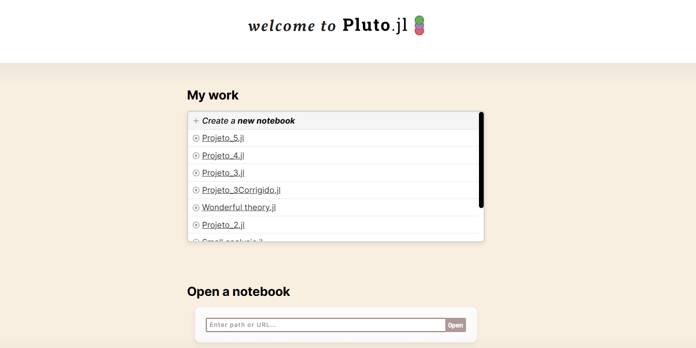
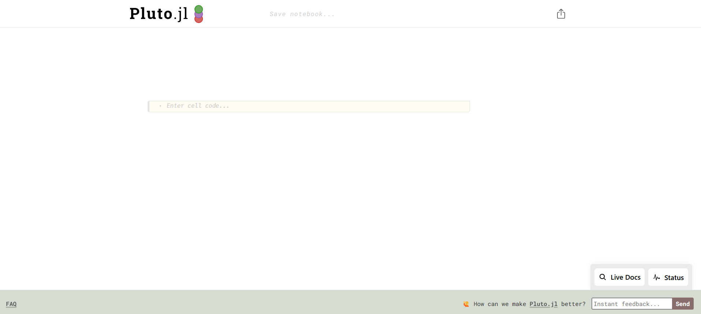

Como criar relatórios dinâmicos com Julia e Pluto
Criação de relatórios dinâmicos em Julia com Pluto.jl: um ambiente de notebooks reativo e fácil de usar, feito sob medida para a linguagem
![]()
Introdução
Ao programar, é essencial manter uma documentação clara e com boa visualização, especialmente ao apresentar nosso trabalho para outras pessoas. Para isso, muitas linguagens oferecem compatibilidade com Markdown, uma ferramenta que permite combinar texto e código de maneira dinâmica, tornando a criação de relatórios muito mais prática.
Felizmente, ao programar em Julia, é possível utilizar Markdown diretamente com o auxílio do pacote Pluto, que integra esses recursos de maneira simples e eficiente.
Instalação do Pluto
Em primeiro lugar, é necessário que o Julia esteja instalado. A partir disso, é necessário abrir o programa e digitar o seguinte código:
using Pkg
Pkg.add("Pluto")Conhecendo o Pluto
Com o pacote instalado, já podemos começar a usar o Pluto. Para isso, abrimos o Julia e digitamos o seguinte código, que será utilizado todas as vezes que quisermos acessá-lo.
using Pluto
Pluto.run()Após rodar o código, o Pluto será carregado e a seguinte tela estará aberta no seu navegador padrão:

Estarão destacados os últimos arquivos acessados e, caso seja a primeira vez, constarão alguns exemplos. A partir de Open a notebook, podemos acessar as pastas do nosso computador e escolher o arquivo que desejamos abrir.
No caso, vamos criar um arquivo do zero clicando em Create a new notebook. Após a criação, esta é a tela inicial que será aberta:

Com isso, a partir dessa página, podemos adicionar os textos e códigos utilizando os cell code (célula de código), os quais podemos adicionar clicando nos “mais” que aparecem ao aproximar o cursor. Para ser um código, basta programar de forma normal, mas para inserir textos, é necessário que esteja no formato md”seu_texto”.
Para ilustrar o básico do Pluto, vamos realizar algumas simples tarefas:
- Adicionar o título “Aprendendo Julia Markdown” (Para aumentar o tamanho do texto, utilizaremos #);
- Inserir o texto: “O código abaixo cria uma função que, dados dois números reais, computa a soma deles:”;
- Inserir o código da função;
- Inserir o texto: “Para testar a função, vamos utilizar como argumentos 2 e 3.”;
- Avaliar nossa função com os valores determinados.
Portanto, agora nós temos:

Vale destacar que as saídas de cada célula aparecem logo acima dela. Além disso, podemos ocultar os códigos que não queremos, a fim de deixar a visualização mais limpa, clicando no ícone de olho que aparece ao passar o cursor em um cell code. Assim, obtemos por fim:

Portanto, utilizando o Pluto, conseguimos criar relatórios dinâmicos combinando texto e código de forma muito prática. Essa integração facilita tanto o desenvolvimento quanto a apresentação dos conteúdos, tornando o processo mais claro, organizado e interativo. Além disso, é possível explorar uma variedade de recursos adicionais, como tabelas, imagens, fórmulas matemáticas em LaTeX, gráficos, e muito mais.
Com essas possibilidades, o Pluto se torna uma ferramenta extremamente útil para documentação de projetos, produção de material didático, análise de dados e compartilhamento de ideias de forma acessível e visualmente atrativa.
Ferramentas de IA foram utilizadas para correção ortográfica e aprimoramento do texto.